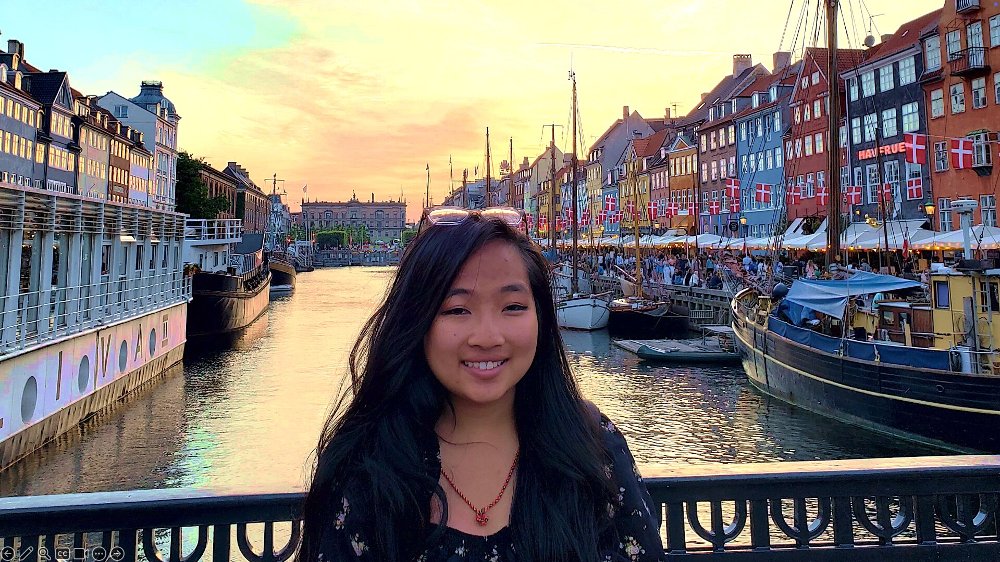

About Me
Chemical Engineer. Builder. Storyteller. Someone who genuinely believes the impossible is just the possible that hasn't been tried yet.

Hi, I'm Kimberly — a BS Chemical Engineering (Honors) graduate from UT Austin with a Certificate in Elements of Computing, and currently an Associate Project Manager at Walt Disney Imagineering, where I work on projects for Tokyo Disneyland and Tokyo DisneySea.
If that sentence sounds like a lot of different things... you're right. That's kind of the point.
This website started as a winter break project after my first coding class — I wanted to apply what I'd learned, and I kept building from there. The projects page documents how I think through problems. The blogs document how I've grown as a person. Together, they're the truest picture of who I am.
Where It Started
Growing up in Houston, I was the kid who couldn't stop taking things apart. LEGO sets, electronics, whatever I could get my hands on. I had an instinct for how things fit together — and an even stronger instinct for making sure I could put them back before my parents noticed.
That curiosity grew into building robotics systems in high school, making short films with my friends, and eventually choosing engineering as the word for what I'd always been doing. But when I arrived at UT Austin as a Chemical Engineering student, I still wasn't fully sure what that meant for me.
I found out pretty quickly. The answer was: everything.
ChemE taught me how to ask the right questions — why does this reaction behave this way, where exactly does the process break down, what does the system look like five steps ahead and five steps behind? That way of thinking has followed me into every role I've had since. Meanwhile, the Computing Certificate gave me a second language: code. Python. SQL. Building apps that actually do things. I started as someone who was curious about technology and ended up someone who builds with it.
Texas Guadaloop: Where Everything Changed
Freshman year, I walked into a Texas Guadaloop meeting and something clicked immediately. Here was a group of students trying to build an actual hyperloop pod — real engineering, real competition, real stakes. I didn't join because I thought I was ready. I joined because I couldn't imagine not joining.
Over the next few years, I went from wide-eyed new member to President of the organization. In between, I worked in research labs studying nanocrystals and graphene biosensors. I studied abroad in Denmark. I got my first internship at Tesla. And I realized that Guadaloop had given me something school hadn't fully taught me yet: how to build a team, navigate failure, and show up for people who were counting on me.
As president, I raised $33,000 to fund our operations, built comprehensive timelines and budget plans from scratch, and presented our work to the Dean, external stakeholders, and executive board members. I led through interpersonal challenges that no textbook covers — the kind that test whether you actually know how to listen. And I hosted EuroTube's R&D Director at SXSW 2023, which was one of those "wait, is this real life?" moments I still think about.
"The measure of a good leader isn't whether things fall apart when they leave. It's whether the organization is stronger than when they arrived." — something I tried to hold onto every single week as president.
Eight Months That Redefined Everything: Tesla
Nobody tells you what it feels like to walk into your first internship at one of your dream companies. I barely slept the night before my first day at Tesla's Gigafactory Texas. I woke up at 5am. I showed up two hours early to COTA.
I ended up staying for eight months — first as a Manufacturing Engineering co-op intern, then as a Material Flow Automation Engineering intern after I internally transferred to a different team. Across both roles I was using SolidWorks and AutoCAD Plant 3D every day, running DEM powder flow simulations, applying Elon's five-step engineering algorithm to actual production problems, and learning how different designing a part is from manufacturing it, and how different manufacturing is from mass manufacturing.
But the lessons that stuck most weren't technical. They were human. I met engineers who had left ExxonMobil, Dow, and NASA to come build the future at Tesla. I went to happy hours and Broadway shows and a spontaneous weekend trip to New York. I learned to ask questions faster and stop spinning on problems alone. And I learned that a manager saying "you're doing a fantastic job" out of nowhere on an ordinary Tuesday can push you forward more than any performance review.
I also learned I could hold a lot at once: co-op intern by day, newly elected president of Texas Guadaloop in the evenings and weekends, and still somehow making time for the Austin Spurs game and a 3am churro food truck run. Balance is a skill like anything else.
Around the World: Denmark → Tokyo
I've always wanted to travel the world. Studying abroad in Denmark my junior year felt like the fulfillment of that dream. I was wrong — it was just the beginning.
The summer after graduation, Woven by Toyota called. I was going to Tokyo as a Systems Engineering intern. Woven is Toyota's subsidiary working on mobility, autonomy, and the future of transportation — the kind of company that attracts engineers who want to build something genuinely new.
I arrived knowing essentially zero Japanese. I left two and a half months later able to navigate the Tokyo Metro, have real conversations with colleagues, and present my engineering work to Toyota executives. The visa process was one of the most stressful things I've navigated — forms that came back wrong, consulate timelines that didn't leave room for error, moments where I genuinely wasn't sure if it would all come together. But persistence works. When I landed at Narita Airport, I felt like I'd earned every minute of what came next.
Tokyo itself was its own education. I hiked near Mt. Fuji. I watched racing at the Suzuka Circuit. I ate ramen in places that had been perfecting the same recipe for generations. And I learned something important: I don't need conditions to be perfect to learn. I just need a reason to.
Making the Impossible Possible: Walt Disney Imagineering
In January 2025 I joined Walt Disney Imagineering as a Project Management intern. If I thought Tesla's pace was fast, Disney showed me what it looks like to manage projects where every detail has to be absolutely right — because the guest experience depends on it.
I started on projects at Disneyland Park and Disney California Adventure — supporting cross-functional teams across creative, engineering, construction, and operations. Budget tracking. Schedule management. Milestone coordination across teams who each speak a slightly different professional language and somehow need to arrive at the same destination together.
In October 2025, I transferred to the Tokyo Portfolio — working on projects for Tokyo Disneyland and Tokyo DisneySea. It was a full-circle moment that didn't feel real: less than two years after arriving in Tokyo as a Woven by Toyota intern with barely any Japanese, I was now a Disney PM working on projects for the most beloved theme park resort in Japan.
In February 2026, I was converted to full-time Associate Project Manager. I took a deep breath and called my mom.
"My mom always said life has a way of connecting the dots in reverse. The hyperloop team, Tesla, Denmark, Japan, Disney — looking back, it all makes sense. Looking forward, I can't wait to see what comes next."
Beyond the Résumé
I was an Undergraduate Teaching Assistant for MIS 302F at UT Austin's McCombs School of Business — a management information systems course that combined technology and business in exactly the way my brain likes to work. I've worked in research labs studying nanocrystals, ionic liquid robots, and graphene biosensors. I was a PEER mentor. I attended the Mercedes AMG High-Performance Powertrains Engineering Programme Workshop.
I've traveled to more than 9 countries. I built this website after my first coding class because I wanted to keep learning. I love mentoring people — as a TA, as a president who took every 1:1 seriously, as someone who believes the best thing you can do for the people around you is pay attention to how they're growing.
The thing that connects all of it: I genuinely believe the impossible is just the possible that hasn't been tried yet. And I'm always looking for the next thing to make possible.